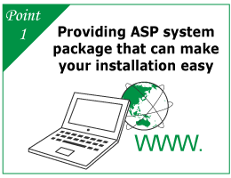

What's Remote Monitering Control System "Nanmoni"
Patrol or inspection by personnel has limitations of unexpected contingencies in distant place. The remote monitoring control system ‘Nanmoni’ is a best solution where you can recognize the status of the monitoring object from distant place. Data transmitted by the monitoring object is aggregated in a data center and easily checked via PC. Services are provided through the ASP system*1, so introduction is easier and the cost is much lower than establishing the system yourself.
PlanA
For customers who need urgent alert messages only.
In the event of an abnormality, a message is sent to registered adress via SMS.
PlanB
For customers who need urgent alert messages, periodic data collection, and remote control of equipment.
In the event of an abnormality, an alert message is
sent to a specified e-mail address.
Data are collected including management records and
contact status.
No-voltage contact output allows the control of
equipment.
Our features
